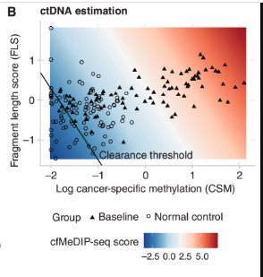

⚠️ Work in Progress: This content is incomplete.
We study the development of the cfMeDIP-seq, a platform used to characterize methylation patterns in cell-free DNA extracted from plasma.
The cfMeDIP-seq assay is the result of optimizing the low-input MeDIP-seq protocol of Taiwo et. al. (2012) [1], which in turn was a specialized version of the protocol established by Weber et al. (2005) [2].
The sequence data analysis is based on the methods developed for the analysis of data produced under the regular MeDIP-seq protocol (input > 100 ng). See Chavez et al. (2010) [3] and Lienhard et al. 2014 [4] and Lienhard et al. 2017 [5] .
knitr::include_graphics( "fragment_length/Figure2B.png", dpi=50)
Figure 2B from Stutheit-Zhao (2024). The figure indicates that this fragment length feature adds very little predictive power, if any, to the methylation index. Recall that this fragment length feature is computed using a reference distribution of fragment length collected using a different platform.
| Resource | URL | Description |
|---|---|---|
| MEDIPIPE | https://github.com/pughlab/MEDIPIPE | Main analysis pipeline |
| cfMeDIP-seq analysis | https://github.com/pughlab/cfMeDIP-seq-analysis-pipeline | Post-processing pipeline |
| Halla-aho scripts | https://github.com/hallav/cfMeDIP-seq | Classifier comparison code |
| Shen et al. ML models | http://doi.org/10.5281/zenodo.1242697 | Original classifier code |
| Protocol tables | https://github.com/bratmanlab/cfMeDIP_Protocol | Processed data tables |
| Dataset | Repository | Accession | Access |
|---|---|---|---|
| HCT116 cell line | GEO | GSE79838 | Public |
| Brain tumors | Zenodo | (see Nassiri et al.) | Public |
| Healthy controls | EGA | EGAD50000000652 | Controlled |
| INSPIRE study | EGA | EGAD00001011312 | Controlled |
| Resource | URL | Description |
|---|---|---|
| MEDIPIPE | https://github.com/pughlab/MEDIPIPE | Main analysis pipeline |
| cfMeDIP-seq analysis | https://github.com/pughlab/cfMeDIP-seq-analysis-pipeline | Post-processing pipeline |
| Bioconductor MEDIPS | https://bioconductor.org/packages//2.10/bioc/html/MEDIPS.html | MeDIP-Seq data analysis |
There are several other Dx ommercial/venture companies going after methylation profiles to detect cancer. Can we have a table describing all companies targeting methylation.